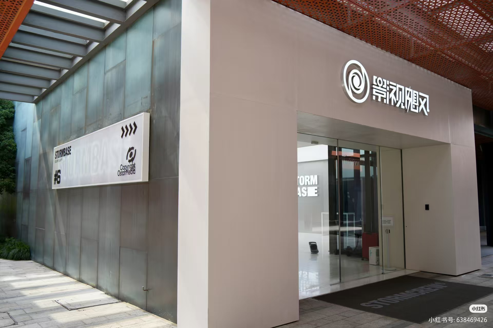

1.食贫道

这是一个个人收藏的B站阿婆主视频列表，包含了我最喜欢的阿婆主视频，希望能对大家有所帮助。注意：以下视频均为个人收藏，不代表官方推荐。正在持续更新中
影视影视飓风是一个由潘天鸿（Tim）创立的头部自媒体品牌，以其专业的影视技术和高质量的内容在国内外获得了巨大影响力。影视飓风的内容以其极高的制作水准、硬核的技术知识和充满人文关怀的选题而著称。
@影视飓风：主账号，聚焦数码评测和深度人文故事。
@亿点点不一样：主打趣味科学和极致视觉体验。
@飓多多StormCrew：偏向公司团建、奢华体验等娱乐化、轻综艺内容。
@飓风商店MediaStore：负责电商产品宣发。
影视飓风已经从一个内容创作者，成长为一个拥有复合型盈利模式的商业化标杆。其核心收入来源主要包括三大块：
电商业务：这是目前最核心的盈利业务。通过自有品牌，推出如短袖、储存卡等产品，其中一款短袖年销量就超过20万件。
频道内商业合作：将广告合作无缝融入高质量视频中，例如为手机、汽车等品牌定制内容，实现“内容即商业”。
TVC广告拍摄：为其他品牌拍摄专业广告片，服务过相机、手机、游戏等多种行业的客户。不过，这项业务的营收占比已降至约10%。
创始人潘天鸿（Tim）是公司的灵魂人物，他身上有几个鲜明的标签：
产品经理特质：具备敏感、睿智、洞察力强和对内容的高认知能力。
家庭背景：他是圆通速递总裁潘水苗之子，但其家庭采取“穷养”策略，他在创业初期遇到困难时，父亲主要提供认知指导而非金钱援助，这塑造了他独立的商业思维。
梦想与愿景：他怀有“去火星”的宏大梦想，并正组建团队冲击奥斯卡短片奖。
在公司文化上，影视飓风以 “无限进步” 为口号，并以其优厚的员工福利闻名，如每年为全体员工（包括实习生）发放最新款iPhone、设立自建食堂和专职营养师等。
"食贫道"是B站上一个风格独特、影响力巨大的自媒体频道，其从美食切入，深入探讨人文、社会议题。"食贫道"以其深厚的纪录片功底和人文关怀在众多内容创作者中脱颖而出。其主理人为张竣，网友亲切称为"饼叔"。前央视记者，曾任职于《东方时空》，并担任过央视驻俄罗斯首席记者及战地记者。
题材深度与社会关怀：食贫道的纪录片虽常从美食切入，但远不止于美食。饼叔凭借其新闻记者的专业敏感度和洞察力，将镜头对准了全球各地普通人的真实生活状态 。无论是《中东大宝荐》中对战乱地区民众生存状态的记录 ，还是《首尔夏天》里对韩国社会内卷与个体挣扎的展现 ，都能引发观众深层次的思考与共鸣。
专业级的制作水准：食贫道的视频以其电影级的画面质感、精良的剪辑和恰如其分的配乐而闻名，被网友戏称为"百万剪辑"和"百万摄影" 。例如在《首尔夏天》中，团队巧妙地运用《鱿鱼游戏》的空镜和配乐来烘托韩国教育竞争的压抑氛围，视听语言非常专业 。
饼叔的个人魅力：作为出镜人和灵魂人物，饼叔（张竣）憨厚亲切的形象、幽默风趣的谈吐，以及标志性的口头禅"大开大合"，都极大地增强了节目的亲和力 。他善于以平等的姿态倾听被访者的故事，让纪录片充满了温度 。
在内容创作普遍"为爱发电"的背景下，食贫道探索出了一条成功的商业化路径：
付费纪录片模式：食贫道是B站"充电计划"的成功典范。其付费专区"大开大合"每月收费12元（连续包月10元），便可观看《迷失东京》、《你好美国》、《首尔夏天》等所有高质量长纪录片 。令人惊叹的是，这些纪录片时长多在90分钟以上，甚至超过3小时，却吸引了超300万用户付费，单项收益突破千万元，形成了"好内容-好收益-更好内容"的良性循环 。
高水准商单：食贫道也与品牌合作，但其商单视频依然保持高水准和独特叙事，巧妙地将产品卖点融入感人故事中。例如与VIVO合作的关于记录奶奶回忆的视频，播放量近500万，被观众誉为"最不像恰饭的恰饭视频"，实现了品牌与内容的双赢 。
食贫道的成功，在当下的内容生态中显得尤为珍贵：
"逆行者"的价值：在短视频充斥、注意力碎片化的时代，食贫道用事实证明，深度、专业、高质量、真实的内容反而成为了稀缺资源，具有巨大的价值 。它让观众愿意为长视频"慢下来"，并感到了"被尊重" 。
真诚创作的回报：食贫道的案例鼓舞了许多内容创作者。饼叔曾分享他的创作秘诀："以导向为魂，以内容为王" 。这条看似传统的原则，在创作内卷严重的今天，反而成为了突围的利器。

HOPICO的影响力不仅限于线上视频。主理人周杨俊鹏曾受邀在2023年3月出席上海音乐学院国际数字音乐节，公开分享了HOPICO在内容制作、资源整合及商业拓展方面的经验。这反映了其在音乐专业领域内也获得了相当的认可。 观众和行业对其内容的普遍评价是专业且有深度，尤其称赞其能引导受访音乐人输出高质量的观点。这使得HOPICO被视为音乐自媒体领域的一个标杆。
HOPICO的访谈以其专业性著称，曾与多位知名音乐人进行深度对话
方大同专访：
在2024年10月的专访中，记录了方大同成立公司、转向幕后工作以及带病坚持创作的状态。
吴青峰专访：
2023年3月，发布了关于专辑《马拉美的星期二》制作细节的专访，探讨了专辑概念与创作故事。
2024年6月的同名专辑续访视频，获得了近147万的播放量，并曾位列B站全站排行榜第70名。